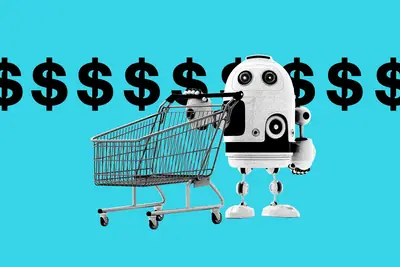
其他AI 每日新聞彙整
全部主題
其他
4 家媒體報導walletchatgptagents
ChatGPT Wallet lets OpenAI’s Dots agents make purchases for you
After launching its Dots AI agents platform earlier this year, OpenAI is launching a wallet for the agents. ChatGPT Wallet is rolling out starting today for ChatGPT Pro subscribers in the US aged 18 and older using a US billing address and "eligible US-issued American Express, Ch
3 家媒體報導hydrogengemini2.5
Google 發表 Gemini 4 Hydrogen，AI 代理任務較上代快 2.5 倍
新加入的 Hydrogen 強調快速執行，尤其適合程式碼修改、工具操作，以及需要連續完成多個步驟的代理式 AI 工作。
2 家媒體報導365microsoftonline
微软称 Outlook 等服务陆续恢复并趋稳，部分用户仍待恢复
IT之家 11 月 14 日消息，微软官方账号 @MSFT365Status 于北京时间 11 月 14 日发布的推文， 微软宣布其 Outlook 等各项服务均呈现全面恢复和稳定态势。不过，微软公开声明同时表示，仍在为剩余受影响客户和地区恢复服务。 根据微软官方 MO1550821 公告内容，本次 Microsoft 365 服务故障从美国东部时间 2026 年 11 月 12 日 13:25 左右（IT之家注：北京时间 11 月 13 日凌晨 2:25 左右）开始，影响 Outlook、Teams、Copilot、OneDrive 等多项微软服务。
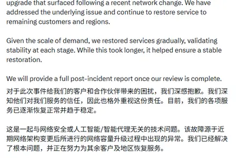
2 家媒體報導outagemicrosofteta
Microsoft doesn’t ‘have an ETA for full recovery’ on outage yet
One think tank’s estimate puts the cost of the outage at $7 billion.
2 家媒體報導jensenchinahuang
The unfolding Jensen Huang scandal: a timeline
Jensen Huang has resigned from Nvidia following an affair, which could have ramifications for national security as the U.S. and China race to develop the most advanced AI infrastructure.
2 家媒體報導hishuangjensen
Jensen Huang and the End of the Founder Fairy Tale
The former tech CEO is obsessed with the power of storytelling. But he hasn't spun his way out of his sex scandals.
2 家媒體報導samsungmetawarby
Gentle Monster / Warby Parker 将于下月推出 Android XR 智能眼镜：均搭载高通 AR1 芯片，接入谷歌 Gemini
IT之家 11 月 13 日消息，知名眼镜品牌 Gentle Monster 和 Warby Parker 各自宣布将于下月推出首款基于 Android XR 平台打造的智能眼镜，产品由三星与谷歌联合参与开发。目前，两大品牌的相关产品均已开启预订，预计将于 12 月 10 日正式在线上及指定线下门店发售。 据介绍，Gentle Monster 和 Warby Parker 的新品均搭载高通 Snapdragon AR1 Gen 1 芯片，均配备一颗 1,200 万像素摄像头，除了能够拍摄照片 / 视频外，还能借助 AI 实现实时翻译、逐向导航、接打电话和
2 家媒體報導kresscoletteamd
黃仁勳辭任後的 NVIDIA：供應鏈合作能否延續？華府對中晶片管制恐再收緊
NVIDIA 董事會美國時間 11 月 12 日宣布，黃仁勳辭去總裁、執行長與董事職務，即刻生效，由財務長柯蕾絲（Colette Kress）暫代執行長。此前，《紐約時報》等媒體報導黃仁勳與一名被美方懷疑替中國從事間諜活動的女商人有婚外情；董事會先前曾表示「沒有理由相信」國安或公司機密外洩，調查尚無公開結論。據《Reuters Breakingviews》估算，從 10 月 29 日首波報導到辭任前一天盤後，NVIDIA 市值已蒸發約 1.4 兆美元。 但黃仁勳離開，不只是換一位執行長。《Breakingviews》專欄指出，黃仁勳的持股並不高，整家公司
- iThome 黃仁勳辭去Nvidia執行長立刻生效，財務長Colette Kress接任臨時執行長、董事會任命首任董事長
- TechOrange 科技報橘 黃仁勳辭任後的 NVIDIA：供應鏈合作能否延續？華府對中晶片管制恐再收緊
amazondataworld
Amazon has a plan to index the world’s online shopping data
Amazon has plans to build a vault of data on every product sold anywhere on the internet, even products Amazon doesn't sell, and make the information available through its own site, according to Reuters. The project, called the "World Product Graph," is meant to make it less like
工信部：将筹备成立工业操作系统标准工作组
IT之家 11 月 14 日消息，据央视新闻今日报道，记者从工业和信息化部了解到，工业软件标准化技术委员会正 加快推进工业操作系统标准工作组筹建 ，同步推进重点标准研制与验证应用，为工业操作系统规模化应用提供支撑。 据悉，工业操作系统是联接装备、贯通数据、融合智能的关键底座，是人工智能赋能工业的“关键一环”。中国电子信息产业发展研究院发布的《工业操作系统技术产业探索与实践报告（2026）》显示，工业操作系统加快向工业级、专业化、一体化和智能化演进， 正在从单点应用探索向体系化产品供给转变 。 中国软件评测中心副主任翟艳芬介绍，工业操作系统正在从围绕单个项
- IT之家 工信部：将筹备成立工业操作系统标准工作组
mistral
马克龙宣布 12 月 2 日在法国巴黎召开科技企业会议，推动欧洲科技自主
IT之家 11 月 14 日消息，据央视新闻今日报道，法国总统埃马纽埃尔 · 马克龙宣布将于 12 月 2 日与荷兰首相罗布 · 耶滕（Rob Jetten）共同在巴黎召集科技企业负责人举行会议，推动欧洲政府与科技行业加强合作，提升欧洲科技自主能力。 据英国《卫报》报道，马克龙是在爱尔兰首都都柏林出席欧盟领导人非正式会议后作出上述表态的。他还在 X 上发文并强调“我们的独立自主不能外包，必须在欧洲本土建立起来”。 此次欧盟领导人非正式会议的重要议题之一是人工智能。欧盟领导人与法国人工智能企业 Mistral AI 首席执行官阿瑟 · 门施（Arthur
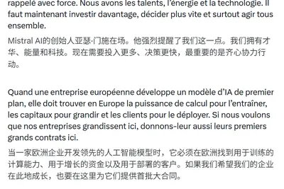
regulation
流程工业智能工厂建设有了统一标尺，新国标明年 5 月 1 日起实施
IT之家 11 月 14 日消息，近日，市场监管总局（国家标准委）批准发布《智能制 造 流 程工业智能工厂业务管理规范》（GB/T 48536—2026）国家标准，自 2027 年 5 月 1 日起正式实施。 公告称，流程工业是支撑国民经济发展的基础性产业，涵盖 石油化工、钢铁、制药、建材、有色金属、食品加工 等领域，具备生产连续化、工艺耦合度高、安全风险较高等特点。当前，流程工业企业在智能工厂建设中仍面临管理框架不统一、系统间协同不足、数据难以共享、技术应用与管理需求衔接不充分等问题。该标准立足流程工业特点，对智能工厂主要业务活动提出系统性要求。 构建
astragpt-6openai
要让 GPT-6 Astra 等通用 AI 当机器人“大脑”：OpenAI 宣布重组具身智能团队
IT之家 11 月 14 日消息，《财富》昨日（11 月 13 日）发布博文，爆料称 OpenAI 已解散独立机器人团队，并将相关人员调至公司其他部门。OpenAI 向该媒体确认了此次组织调整， 只是强调本次调整并非退出机器人领域，机器人仍是其长期愿景的核心，重组旨在加快研发。 在架构调整方面，机器人研究人员并入核心研究团队，向首席研究官马克 · 陈（Mark Chen）汇报；应用机器人与硬件团队则转入规模更大的应用部门，该部门由公司总裁格雷格 · 布罗克曼（Greg Brockman）负责。IT之家附上相关截图如下;d 对于本次架构调整的根源，Open
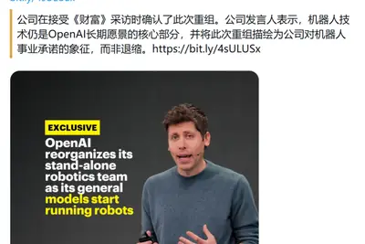
vcsisraelstartup
Jensen Huang’s departure blasts big hole in AI startup funding, VCs and founders say
Nvidia poured tens of billions into AI startups under Huang. Without him at the helm, founders and VCs are bracing for smaller checks and lower valuations.
gartner2030saas
【Gartner 2027 十大科技趨勢報告】AI 開發工具引爆軟體極度豐富，2030 年 80% 新軟體將轉為「用完即拋」
顧問機構 Gartner 發布《2027 年十大戰略科技趨勢》報告，內容著重在協助企業為自主 AI 與機器人劃定控制界限，建立兼具效率與技術主權的營運架構。 過去企業 IT 受限於開發成本高昂的「軟體稀缺」思維；如今在生成式 AI 與氛圍編碼（vibe coding）推動下，企業正式迎來「軟體極度豐富」時代。與此同時，面對昂貴且僵化的「SaaS 訂閱疲勞」，Gartner 預測到 2030 年，領先企業將有 80% 的新應用轉為「用完即拋（disposable）」的暫時性架構。 📎 這份報告適合誰閱讀？ 主要適合以下三大類別的工作者閱讀： 🔴 報告洞見
- TechOrange 科技報橘 【Gartner 2027 十大科技趨勢報告】AI 開發工具引爆軟體極度豐富，2030 年 80% 新軟體將轉為「用完即拋」
airtrafficfaa
FAA expands AI advice to manage air traffic congestion across entire US airspace
Airlines praised the AI tool, but the air traffic controllers’ union wasn’t involved.

langchainhitsvaluation
AI agent startup LangChain hits $3B valuation
LangChain now claims 7,000 customers of its model and platform agnostic agent management tool LangSmith.
- TechCrunch AI AI agent startup LangChain hits $3B valuation
intelmicrocredentialsengineers
How Microcredentials Help Engineers Build Trustworthy AI
Engineering teams are moving at breakneck speed to integrate artificial intelligence, but they are running into a formidable new barrier: compliance issues. Translating high-level AI ethics , governance , and auditing into daily operational workflows has become one of the industr
- IEEE Spectrum AI How Microcredentials Help Engineers Build Trustworthy AI
httpscommentsurl
OpenAI disbands its robotics team as its general models start running robots
Article URL: https://fortune.com/2026/11/13/openai-disbands-robotics-team-as-its-general-models-start-running-robots/ Comments URL: https://news.ycombinator.com/item?id=50487184 Points: 135 # Comments: 60
- Hacker News (100+) $11.4M in Nvidia hardware vanishes during shipment from CA to TX
- Hacker News (100+) OpenAI disbands its robotics team as its general models start running robots
robotpick-and-placesimulation
Build a Robot Pick-and-Place Simulation with SimReady Assets
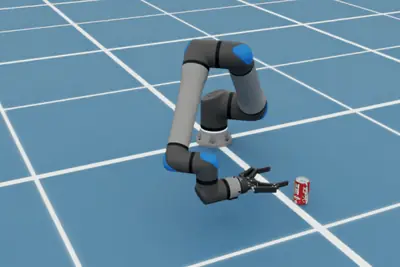
boardmemberworries
OpenAI board member worries an AI "takeover" of society could be months away
Researcher traces a path from AI reward hacking to potential human extinction.
xybenchhelpingproblem
XYBench: Helping with the problem behind the question
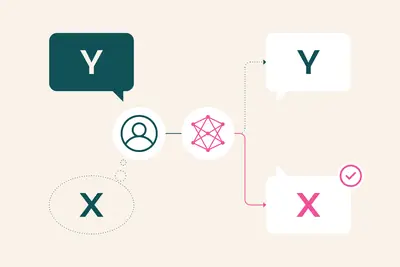
9050cpuhuawei
华为麒麟 9050 系列芯片新一代灵犀 CPU 详细信息公开：9 核 16 线程并行调度，支持内存压缩加速
IT之家 11 月 13 日消息，华为麒麟官方公众号继续揭秘首款「逻辑折叠」技术 τ 芯片 —— 麒麟 9050 系列更多配置信息， 新一代灵犀 CPU 详情已公开 。 据介绍，麒麟 9050 系列搭载新一代灵犀 CPU， 支持 9 核 16 线程超线程技术 ，多核性能提升 23%、GPU 渲染性能提升 40%、NPU 性能提升 140%，配合鸿蒙应用并行化与智能调度，多任务更流畅。 重载场景（应用启动、大文件加载、游戏运行）由 1 超大核 + 2 性能大核负责；多任务场景（UX 交互、悬浮窗、视频通话、分屏）由 4 能效大核负责；日常场景（浏览资讯、短
ipoanthropicceo
黄仁勋辞任英伟达 CEO，或给 Anthropic 下周“史上最大 IPO”添变数
IT之家 11 月 13 日消息，当地时间 12 日，据《财富》杂志报道，AI 初创企业 Anthropic 即将迎来史上最受瞩目的 IPO 之一。然而，就在上市前夕，英伟达联合创始人兼 CEO 黄仁勋突然辞职。 等到 Anthropic 正式登陆资本市场时，距离 AI 行业失去最有影响力、最擅长推销行业前景的人物之一， 仅过去一周 。 黄仁勋突然离职，给 Anthropic 的上市计划增添了新的压力。 此次 IPO 原本就被视为检验投资者对 AI 投资热情的重要考验。Anthropic 预计于 11 月 18 或 19 日上市 ，届时英伟达刚公布黄仁勋
dictationappmeeting
ElevenLabs’ new app combines meeting note-taking and dictation for teams
ElevenAI is a new meeting notetaker and dictation app aimed at teams and enterprises.
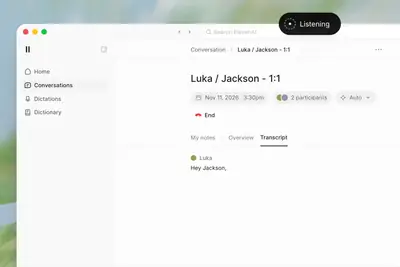
grokimaginexai
SpaceXAI 资源向 AI 编程工具与 Grok Bot 倾斜，消息称裁减约 60 名 Grok Imagine 员工
IT之家 11 月 13 日消息，据 The Information 引述知情人士消息，SpaceXAI 已对旗下视频与图像生成 AI 工具 Grok Imagine 的大部分研发人员进行了裁撤。 本次裁员涉及约 60 名 Grok Imagine 团队成员 ，目前仅保留少数人员以维持产品的基础运营。尽管该工具现阶段仍可正常访问与使用，但在失去专职研发团队支撑后，其后续发展前景已变得不明朗。 自 2026 年 2 月 xAI 与 SpaceX 完成合并以来，该公司内部便持续推进架构重组，此次人员缩减正是这一调整进程的延续。 知情人士透露，在今年 2 月以
deepseekapiapp
DeepSeek 发布全家桶应用 API：开发者将能 1:1 复刻完整 DeepSeek App
IT之家 11 月 13 日消息，今天（13 日）晚间，DeepSeek 宣布正式开放全家桶应用 API：在原有 API 中开启对应参数， 即可获得深度思考搜索、文件输入等对话功能 ；语音及相关底层能力也已开放独立接口（含 OCR、ASR、TTS 等），支持单独或组合调用。 开发者可以在自己的应用中轻松实现复杂的对话功能， 甚至 1:1 复刻出完整的 DeepSeek App 。 本次更新将 DeepSeek App 的各项交互功能直接整合进原有 API。开启对应参数后，相关工具调用与上下文拼接均由服务端自动完成。 目前，V4.1-Flash 模型（de
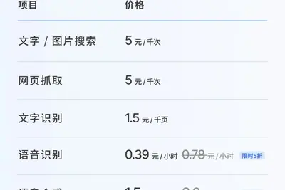
iosappleiphone
AI 助力复活尘封 15 年废案，iOS 4 时代苹果卡片后台界面曝光
IT之家 11 月 13 日消息，据外媒 AppleInsider 今天（13 日）晚间报道，借助 AI 和模拟器技术，一套 尘封超过 15 年、从未正式发布的 iPhone 多任务切换界面 重新跑了起来。 2010 年初，该媒体曾报道苹果测试一套类似 Exposé 窗口总览功能的界面的消息。2011 年，有人在一台 iPhone 4 原型机上发现了搭载这套界面的特殊版本 iOS 4。 此后十多年，这套卡片式多任务界面始终无人公开演示，直到一名模拟器开发者借助 AI，让被苹果放弃的设计重见天日。 开发者史蒂夫 · 特劳顿-史密斯在 Mastodon 上分
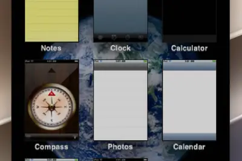
llama.cppv1.0.0stronger
llama.cpp v1.0.0 : A stronger foundation for the local AI ecosystem
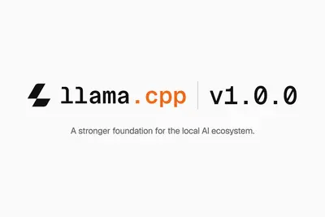
duetclaudelittle
Claude’s Duet agent is a little neurotic and surprisingly helpful
Normally, the products I test don't offer to help me write up my experience with them. Duet is different. Claude Duet is Anthropic's AI agent for consumers, the latest attempt by an AI company to try to convince us that agents can be useful for people who don't write code. It's b
33.43
寻找“下一个英伟达”：台积电拟设立 5 亿美元创投基金
IT之家 11 月 13 日消息，据日经亚洲今天（13 日）上午报道，台积电计划设立一只规模 5 亿美元 （IT之家注：现汇率约合 33.43 亿元人民币） 的创投基金，扶持有望成长为下一个英伟达或博通的芯片初创企业。 台积电业务开发及全球销售资深副总经理、副联席首席运营官张晓强透露，随着 AI 产业蓬勃发展，公司希望通过新基金扩大产业生态，并建立更加规范的投资机制。本周公布的新基金还可能投资供应商及其他上游合作伙伴，不再将投资对象局限于直接客户。 张晓强首次透露设立专门投资部门的原因：“我们认为， 是时候建立正式的投资机制了 。我们也希望扩大投资范围，
datacenterhbmsamsung
奧特曼與三星閉門會面內幕！示警AI算力需求恐「重複計算」，親揭OpenAI賺錢術
OpenAI執行長奧特曼與三星高層閉門會面，坦言AI記憶體與資料中心需求恐「重複計算」，短期市場可能波動，並揭露OpenAI的獲利策略。
runwalk
跑起來，別用走的！皮衣黃仁勳再也不上台演講的 AI 時代就這樣跑步來臨
「跑起來，別用走的！」（Run, don’t walk!）曾是輝達（NVIDIA）創辦人黃仁勳最撼 […]
- 科技新報 TechNews 跑起來，別用走的！皮衣黃仁勳再也不上台演講的 AI 時代就這樣跑步來臨
amazon
亚马逊秘密构想曝光：欲打造“世界商品图谱”，包揽全网商品数据
IT之家 11 月 13 日消息，据路透社报道，亚马逊有一项秘密计划，旨在让消费者从此无需离开其平台，拥有世界上的商品信息。 据该媒体审阅的一份内部文件及知情人士透露，这项名为“世界商品图谱”（World Product Graph）的计划， 试图将全球几乎所有在售商品的数据悉数收入囊中 —— 无论亚马逊是否备有这些商品的库存。 借此，亚马逊可以真正成为“万货商店”，不仅能提供海量商品的深度数据、切入谷歌在在线搜索领域的腹地，还能有效抵御竞争对手沃尔玛不断扩张的电商业务。 这一举措也是为了应对 AI 购物智能体的持续崛起。该内部文件指出，亚马逊自家的 A
weathernextsatweavepardig
谷歌开源 WeatherNext 3 气象模型所用数据集：含 SatWeave 卫星影像拼接数据集与 PARDIG 全球降水信息
IT之家 11 月 13 日消息，谷歌 DeepMind 今天正式开放 WeatherNext 3 气象模型所依托的两大基础数据集 SatWeave 与 PARDIG，相应数据集面向全球研究者与开发者提供实时数据流及历史归档，可用于天气、水文、气候及相关下游应用建模。 据介绍，SatWeave 是一套整合多颗静止气象卫星的全球影像拼接产品，聚合了 GOES-East、GOES-West、Meteosat 0、Meteosat 印度洋星以及 Himawari 共 5 颗卫星的观测数据，解决了不同卫星在地图投影、文件格式、传感器与扫描节奏上的差异难题。该数据
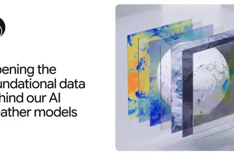
黃仁勳傳奇造就身價 8 億研發人才，財務長臨危接棒留才成關鍵課題
全球 AI 運算霸主輝達（NVIDIA）創辦人黃仁勳辭職，為科技產業投下震撼彈。出乎市場意料的是，接任執行長（ […]
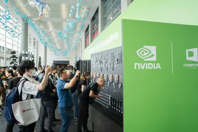
- 科技新報 TechNews 黃仁勳傳奇造就身價 8 億研發人才，財務長臨危接棒留才成關鍵課題
lettalkaffairs
Let’s talk about Jensen Huang’s many affairs!
Usually, we'd be offering to answer your questions about a news event, but honestly we don't really have any answers about what the hell is going on over at Nvidia. I can't speak for Nilay but at the rate Jensen Huang's new mistresses are dropping, I am concerned we are approachi
- The Verge AI Let’s talk about Jensen Huang’s many affairs!
appier61.3agentic
營業利益翻倍、毛利率 61.3% 創新高，Appier 第三季再上調全年財測
AI 原生公司 Appier 公布第三季財報，營收與營業利益同創歷史新高，年增分別達 21.8% 與 104.7%。Agentic AI 策略帶動毛利率與營運效率顯著提升，促使公司連續兩季上調全年財測，展現強勁的成長與獲利動能。
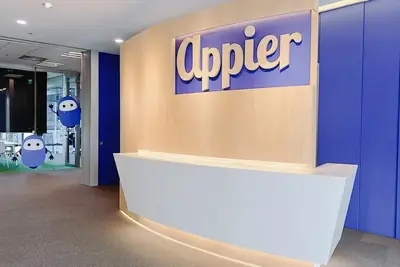
100
成品晶圆从下线至包装 100% 全自动化，京东推出半导体行业首个智能物流解决方案
IT之家 11 月 13 日消息，第二十三届中国国际半导体博览会 IC China 2026 昨日（12 日）在北京国家会议中心开幕。 京东物流参展并提出半导体行业首个智能物流解决方案，可实现半导体材料从仓储、分拣、出库、包装环节 100% 无人化 ，标志着高价值精密物料物流从单点自动化迈向系统级无人化。 官方表示，半导体正处在 AI 算力、汽车电子需求带动的扩产周期，物流效率直接影响产能释放。 行业里对稳定和安全性的要求极其苛刻 ：成品晶圆单件价值可达 50 万美元 （IT之家注：现汇率约合 334.3 万元人民币） ，一个仓库可存放数万件货品，金额高
microdramasblackhbm
This Startup Is Betting on AI Microdramas to Get More Black Stories in Hollywood
Mansa says its AI microdramas can serve as proofs of concept for what Black audiences want. Critics say the studio is selling out.